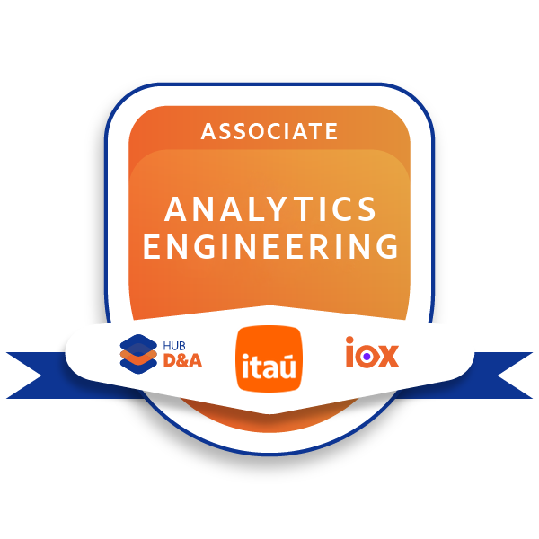
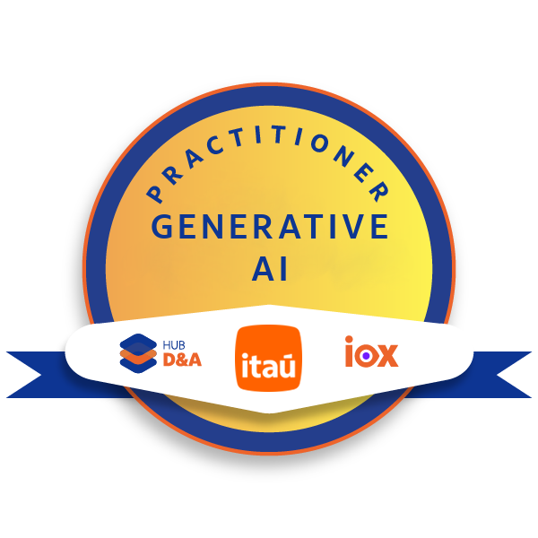
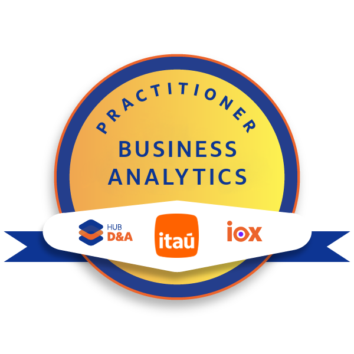

Certificações




Cargo
Empresa
Estagiário em Dados & Analytics
Itaú Unibanco
Fevereiro - 2025 a Junho 2025
Durante 6 meses fiz parte do Estágio Turbinado (Trainee para Estagiário), programa que capacita colaboradores na área de dados por meio de rotações em diferentes squads. Ao longo da experiência, aprendi sobre ingestão de dados brutos, processamento, harmonização, storytelling e, visualização de dados. Ao longo do programa, desenvolvi produtos de dados com foco em ETL , automações (utilizando Alteryx, Python e AWS Glue, AWS Athena), e dashboards no AWS QuickSight, sempre com o objetivo de responder a perguntas de negócio e facilitar o uso das informações pelas áreas. As entregas envolveram desde validações operacionais até soluções com geolocalização e navegação integrada, fortalecendo minha capacidade de transformar dados em insights.
Cargo
Empresa
Estagiário em Dados & Analytics
Itaú Unibanco
Julho - 2025 até o Momento
Atualmente faço parte do BT D&A, na comunidade de Experiência e Inteligência de Conteúdos, atuando com modernização e automação de rotinas. Em pouco tempo, implementei melhorias que eliminaram totalmente atividades manuais em alguns processos, utilizando agentes do stackspot e copilot, tecnologias da AWS (S3,Glue, Athena) e ferramentas da Microsoft (Power Automate, SharePoint e Power Apps). Além disso, realizei a otimização do design dos painéis no QuickSight, tornando-os mais intuitivos, visuais e acessíveis para todos.
Mapeamento de Pontos Terceirizados do Itaú
Desenvolvi um produto para exibir a localização e demais informações dos pontos terceirizados do banco. Utilizei três bases diferentes e realizei o ETL com AWS Athena, além de configurar a automação da atualização mensal dos dados por meio do AWS Glue. No QuickSight, construí o dashboard aplicando recursos avançados como geolocalização, hierarquias e parâmetros, além de criar um design com foco em facilitar a leitura e o uso pela operação.
Democratização da base B0.
Atuei na democratização da base B0 junto ao time de Engenharia de Dados de Infra e Canais Físicos, apoiando nas etapas do processo. Utilizei VSCode, pipelines no GitHub e AWS Glue para ETL e validação de dados. Também adquiri conhecimentos sobre contas producer e ambientes de homologação, ampliando minha visão sobre arquitetura de dados na nuvem.
Modernização de rotinas
Atualmente sou responsável pela modernização de rotinas legadas, migrando todo o processo para a AWS e integrando soluções com SharePoint e Power Automate. Já modernizei três rotinas, promovendo automação completa, redução de tarefas manuais e aumentando significativamente a eficiência. Em uma delas, foi alcançada redução de 100% na taxa de erros, demonstrando maior confiabilidade e qualidade nos processos.
Criação de agentes
Participei da criação e implementação de agentes de inteligência artificial utilizando Copilot e StackSpot, com foco na automação de processos e redução de tarefas manuais. Adquiri conhecimento sobre o funcionamento de agentes como Guardrails e atualmente estou desenvolvendo, em conjunto com a operação, um agente para auxiliar no atendimento a clientes. Além disso, forneço suporte para melhorias em agentes existentes que realizam a conversão de fluxos do Alteryx para AWS Glue.
Home para Consolidação de Dashboards de Pontos Terceirizados
Com o objetivo de centralizar os dashboards relacionados aos pontos terceirizados do Itaú, elaborei uma página inicial (home) no QuickSight, onde concentrei todos os painéis da RT de Dados e numerário. A navegação foi otimizada com links diretos entre os painéis, proporcionando uma experiência mais fluida e eficiente para os times que utilizam essas informações.
Validação de Encarteiramento de Clientes Uniclass
Criei um produto para validar os clientes Uniclass que foram efetivamente encarteirados. Trabalhei com três bases distintas e realizei o processo de ETL utilizando Python. A base consolidada foi utilizada para construir um dashboard no QuickSight, que atendeu às principais perguntas e necessidades da minha cliente.


Clique para abrir o presente
Se o meu perfil se alinhou com a vaga me chame para um bate-papo, talvez eu seja o Junior "Feito para você!"
Teams: Evandro Jose Pascoal
Email: evandro.pascoal@itau-unibanco.com.br